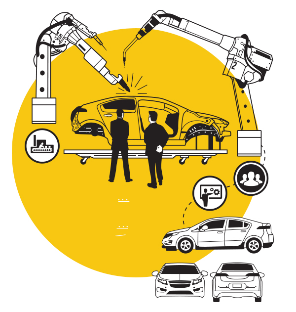

Work with clients aimed at collecting feedback on reviews of the future model. Collecting suggestions for improving the car.
Development of advanced engine technologies, gearbox development, engine production, creation of electronic control systems,
creation of car components (metal rolling, creation of forms of plastic car elements), introduction of new trends.
Packaging, design of the study.
Body design and work to create impact resistance of the body, work to optimize the weight of the machine, debugging for durability.
Creation of technologies to reduce the aerodynamic drag of the air.
Design, development, adjustment and testing (in the laboratory and on the road) for endurance and rigidity of the body.
Solving the issue of integrating infotainment technologies, seats, lighting systems into the car.
Testing the car: in hot weather, in severe frost, as well as checking the vehicle in a humid climate.
Crash tests.
Fuel economy estimates.
Planning of the serial production process, including assembly work.
Analysis of the cost of car components and the cost of production.
Signing contracts with suppliers of third-party components.
Certification for the safety level and emissions of the new model.
Manufacture or purchase of body components.
Construction or reconfiguration of production facilities.
Production of body and interior design components.
Checking all components for compatibility.
Improving the quality of the car by selecting reliable components.
Analysis of readiness to start production.
Hiring a workforce or transferring existing employees to a new line.
Interaction with suppliers.
Launch of serial production of a new model. ((As a rule, the first limited batch is
produced first to assess future production volumes).

Market research before the start of mass production.
Determination of the retail (market) price of the car.
Development of marketing promotion.
Delivery of car model samples to dealers.
Logistics plans (mass delivery of cars to dealers).
Creation of advertising materials.
Presentations of a production car. The car's debut at the world auto show.
Attracting the attention of the press, social media-media, dealers and analysts to this novelty.